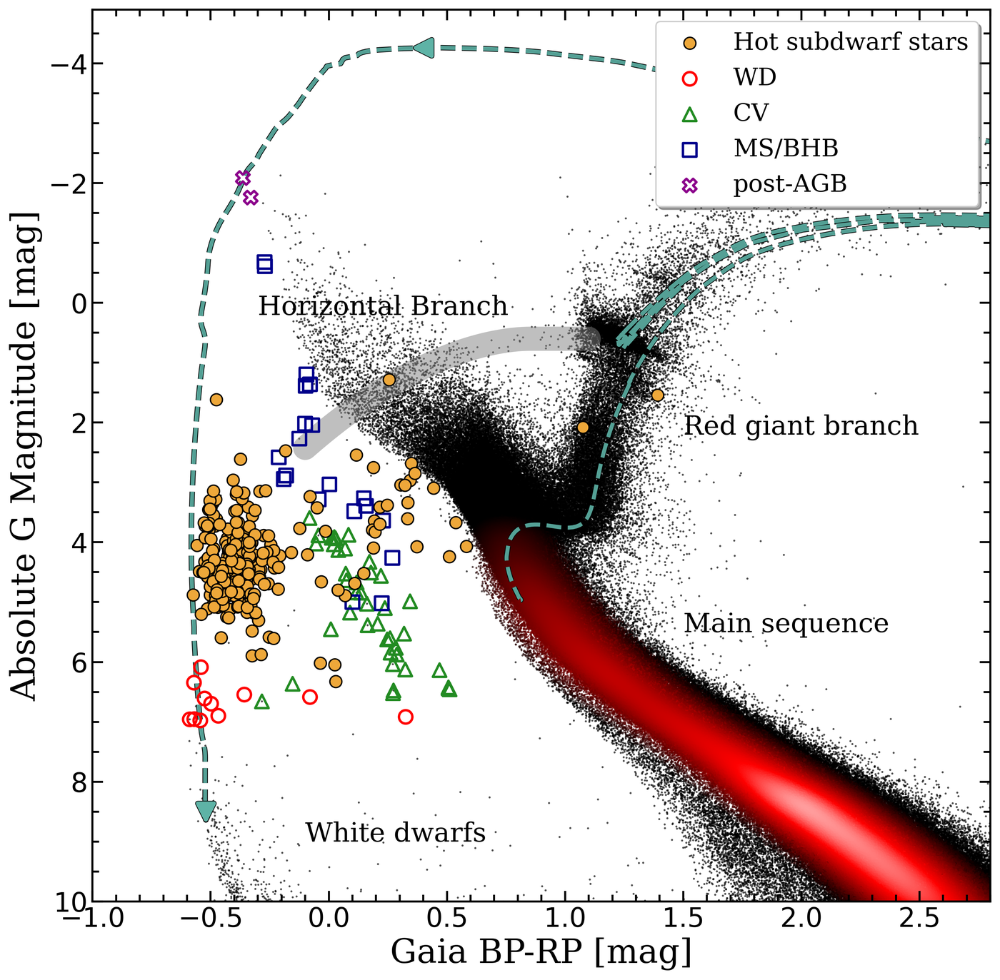

Research

A 500 pc volume limited sample
My doctorate comprises three papers establishing and characterising the first volume-limited sample of hot subdwarfs within 500 pc. The first measures their Galactic space density, finding it an order of magnitude below theoretical predictions. The second characterises their atmospheric parameters, masses and kinematics. The third studies the close-binary population, solving the majority of the orbits and providing the close-binary fraction.
-
I
Space density, scale height and population properties
Established the sample and measured a mid plane space density of 6.15 × 10⁻⁷ stars pc⁻³, about an order of magnitude below the predictions of binary population synthesis.
Dawson, Geier, Heber + 25 · A&A 686, A25 (2024)
-
II
Atmospheric parameters, mass distribution and kinematics
Quantitative spectral analysis and spectral energy distribution fitting across the sample, giving a homogeneous set of atmospheric parameters, masses and Galactic population membership.
Dawson, Dorsch, Geier + 30 · A&A 707, A6 (2026)
-
III
The short period binary population
Radial velocity follow up to pin down the close binary fraction.
Dawson, Dorsch, Munday + 16 · Accepted, A&A (2026)
Observing
Completing a volume limited sample spectroscopically means observing every unclassified candidate in it. Over 100 nights at telescopes from 1 to 8 m, as principal investigator or dedicated principal investigator on programmes at the INT, NOT, SOAR, NTT, WHT, Calar Alto and the VLT.
Full publication list on ADS →
Telescope time and proposals are listed in my CV →